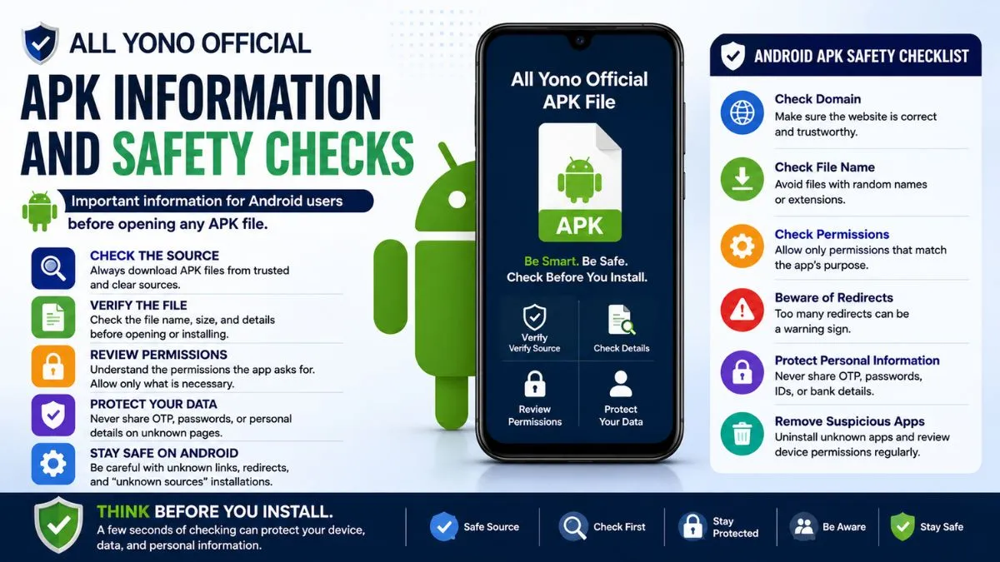

All Yono Official APK Information and Safety Checks

Many users search for All Yono Official APK information because they want to understand Android access, app file details, and safety checks before opening anything on their phone. This is important because APK files are different from normal web pages. They can affect device settings, permissions, storage, and user privacy.
This article is written for users who want clear information before continuing. It does not provide app files or encourage users to open unknown files. Instead, it explains what an APK is, why Android users should be careful, and what basic checks can help reduce common risks.
If you are new to All Yono Official, start with a simple habit: check the source, check the file, and check the permissions before taking action.
What Is an APK File?
An APK file is an Android app package file. It is used to install an app on an Android device. Many users see APK files when an app is not opened directly from a regular app store or when a page provides an Android file separately.
For users, the important point is simple. An APK file is not just a normal image, text, or web page. It can install software on your phone. Because of that, users should treat APK files carefully.
Before opening any APK file connected to All Yono Official or any related app name, users should understand where the file came from, what the file claims to do, and what permissions it may ask for after installation.
If the source is unclear, do not rush.
Why APK Safety Checks Matter
Android devices give users flexibility. That is useful, but it also means users need to be more aware when installing files from outside common app sources.
Some APK files may be safe and expected. Others may use familiar names to confuse users. A file name can look normal even if the source is not clear. That is why checking only the file name is not enough.
APK safety checks help users avoid opening the wrong file, giving unnecessary permissions, or sharing private details on unclear pages.
For general link safety, users can also read the All Yono Official link safety article.
Check the Source Before Opening Any APK File
The first thing to check is the source. Ask yourself where the file came from. Did it come from a clear page? Was it sent through a random group? Was it shared by an unknown person? Was it hidden behind a short link?
Files shared through random messages, forwarded posts, comments, or unclear pages should be treated carefully. Even if the file name includes All Yono Official, that does not automatically confirm that the file is safe.
A safer source should explain what the file is, why it is provided, and what users should check before opening it. If the page only shows a button without information, pause first.
Do not open an APK file only because the link looks urgent or popular.
Look at the File Name and File Details
Before opening any APK file, check the file name. A strange file name with random letters, numbers, or unrelated words can be a warning sign.
Also check the file size if it is shown. Very unusual file sizes may not always mean danger, but they are worth noticing. If the page says one thing and the file name says another, do not continue.
Users should also avoid duplicate files with confusing names. For example, a file may have extra numbers or repeated copies if it was downloaded more than once. This can make it harder to know which file came from which source.
If you are not sure what the file is, it is better not to open it.
Understand Android Permission Requests
After opening or installing an Android file, the app may ask for permissions. Permissions control what the app can access on your phone.
Some permissions may match the app's purpose. Others may be unnecessary. Be careful if an app asks for access to contacts, SMS, phone calls, storage, camera, microphone, notifications, or location without a clear reason.
A basic rule helps: if the permission does not match what the app is supposed to do, stop and review it.
Do not approve permissions automatically. Many users tap "Allow" quickly just to continue. That habit can expose private data.
Take a few seconds to read each permission request.
Be Careful With "Install From Unknown Sources"
Android may show a setting related to installing apps from unknown sources. This setting allows installation outside standard app sources.
Turning this on does not mean the file is safe. It only means your phone is allowing the installation process.
Users should not confuse "allowed to install" with "safe to install." They are different things.
If a page tells you to change device settings quickly without explaining the risk, be careful. Device settings should not be changed casually, especially for files from unclear links.
Do Not Share Private Details Through APK Pages
Some app-related pages may ask for account details before or after an APK file is opened. Users should be careful with this.
Do not share OTPs, passwords, Aadhaar details, bank information, wallet details, personal IDs, private screenshots, or account records on unclear pages.
If an APK-related page asks for sensitive details too early, that is a warning sign. A user should understand the page first before entering any information.
For a broader beginner overview, read the All Yono Official app guide.
Watch for Redirects Before the File Appears
Sometimes users click a link expecting one page, but the link sends them through several redirects before showing a file. This can be risky.
A few redirects may happen on some websites, but repeated redirects can confuse users. If the page keeps opening new tabs, sending you to unrelated websites, or showing different buttons every time, close it.
An APK file should not require a user to pass through many confusing pages. If the path feels unclear, it is better to stop.
Do not keep clicking different buttons hoping to find the right file.
APK Safety Checklist for Users
Use this checklist before opening any All Yono Official APK-related file.
| What to Check | Why It Matters |
|---|---|
| File source | Helps confirm where the APK came from |
| Domain name | Helps avoid fake or similar-looking pages |
| File name | Strange names may be a warning sign |
| File size | Unusual size can be worth checking |
| Permissions | Protects contacts, storage, SMS, and device data |
| Redirects | Too many redirects can lead to unsafe pages |
| Private details | OTPs, passwords, IDs, and payment details should be protected |
| Device settings | "Unknown sources" should not be enabled casually |
| Page content | A clear page should explain what users are opening |
| Pop-ups | Forced pop-ups or tabs can be unsafe |
This checklist is simple, but it gives users a better way to pause before opening files.
Common Warning Signs
There are some signs that users should not ignore.
Be careful if the page uses urgent messages, unclear buttons, broken text, copied layouts, or too many redirects. Also be careful if the file appears without any explanation.
Another warning sign is when the file name does not match the page name. If you expected All Yono Official APK information but the file name shows something unrelated, do not open it.
Also watch for pages that ask for private details before giving any clear explanation. A trustworthy information page should not pressure users.
What to Do If You Already Opened a Suspicious File
If you already opened or installed a file and something feels wrong, act carefully.
Check your installed apps. Remove anything you do not recognize. Review app permissions in your Android settings. If an app has access to sensitive areas without a clear reason, remove that access or uninstall the app.
Avoid entering personal details if the page or app looks unclear. If you entered a password on a suspicious page, change it where needed. If you shared an OTP or private information, be extra careful with related accounts.
Do not keep using an app if your phone starts showing strange pop-ups, unusual notifications, or unexpected redirects.
Better Habits for Android Users
Android users can stay safer by building simple habits.
Read before tapping. Check the link before opening. Avoid short links from unknown sources. Review permissions slowly. Do not install files from random groups. Do not keep old APK files in your downloads folder if you no longer need them.
Also keep your phone updated when possible. Updates can help improve general device protection.
A careful user does not need advanced technical skills. Most safety comes from slowing down and checking basic details.
FAQs About All Yono Official APK Information
All Yono Official APK information should be handled with care because APK files can affect your Android device directly. Before opening any file, check the source, domain, file name, permission requests, redirects, and privacy risks.
Do not rush because a page looks familiar. Do not install files from unclear sources. Do not share private details just because a page asks for them.
For Android users, the safest habit is simple: read first, check carefully, and only continue when the page and file are clear.
AllYonoOfficial.com does not run or own the apps listed here. The rummy app can be addictive and risky financially, so use them carefully. Only for 18+ people.
Please read our Disclaimer page and the specific disclaimer for each app.
Alert: Rummy, a skill-based game, is banned by the government in Andhra Pradesh, Sikkim, Nagaland, Assam, Arunachal Pradesh, Tamil Nadu, Odisha, and Telangana.